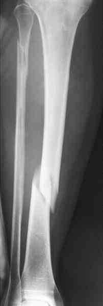
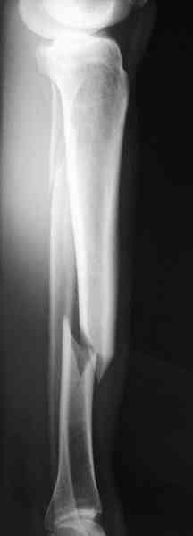
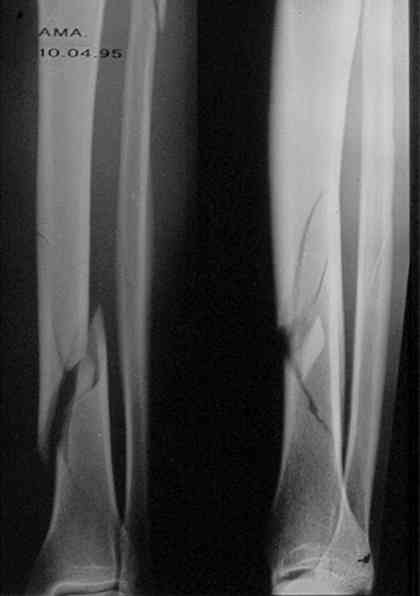
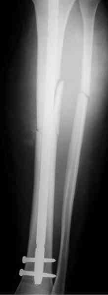
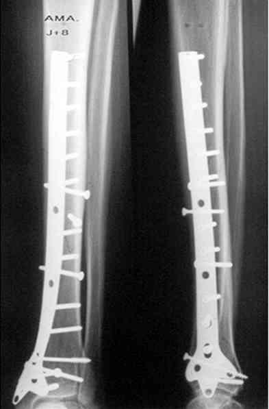
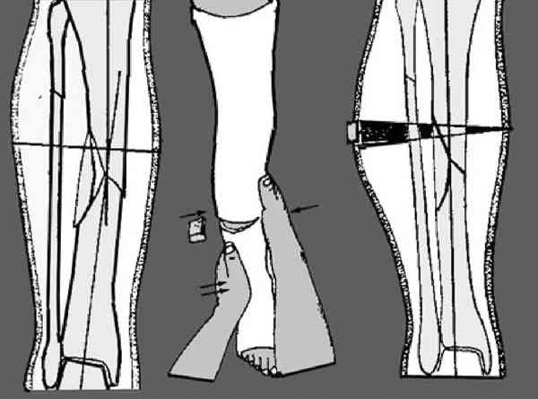

Bienvenue Sur Medical Education
Fractures : jambe
Spécialité : traumatologie /
Points importants
-
On distingue les fractures des 2 os de la jambe et les fractures isolées du tibia (plus rares)
-
Elles s'étendent depuis la région sous-tubérositaire jusqu'à environ 4 cm au-dessus du pilon tibial
-
Les fractures du péroné sont habituellement considérées comme des fractures accessoires surtout lorsqu'elles sont diaphysaires
-
Les fractures non déplacées de la jambe peuvent être traitées par le médecin urgentiste à condition qu'il travaille en étroite collaboration avec le chirurgien orthopédiste qui doit être disponible en cas de déplacement secondaire
Présentation clinique / CIMU
SIGNES FONCTIONNELS
-
Douleur importante
-
Impotence fonctionnelle
CONTEXTE
Présentation clinique / CIMU
SIGNES FONCTIONNELS
- Douleur importante
- Impotence fonctionnelle
CONTEXTE
Circonstances de survenue
- Traumatisme direct (lésions cutanées puis osseuses)
- Traumatisme indirect
EXAMEN CLINIQUE
Diagnostic
- Evident sur la déformation du membre qui repose sur la table par le bord externe du pied
- Moins évident lorsque la fracture est non déplacée, sous-périostée
L'ouverture cutanée
- Relativement fréquente dans les accidents à haute énergie du fait du caractère sous-cutané du tibia
- La plaie peut être classée selon les 3 stades de Cauchoix
Les lésions vasculaires et/ou nerveuses
- Relativement rares dans les fractures fermées
- Plus fréquentes dans les gros délabrements cutanés, musculaires et osseux
- Vasculaires (pouls pédieux, tibial postérieur, pouls capillaire, évaluation du retour veineux)
- Nerveuses (sensibilité et motricité du pied)
Le syndrome des loges
- Loin d'être rare
- Doit être suspecté devant une fracture par contusion de la loge antéro-externe (fracture transversale de jambe) et devant un gros déplacement du péroné
- Douleur intense, loge antéro-externe tendue, paresthésies du pied
- Une prise de pression s'impose au moindre doute
Signes paracliniques
IMAGERIE
Radiographie
- Face et profil prenant le genou et la cheville
- Confirme le diagnostic
Variétés anatomiques
- Les plus simples correspondent aux fractures transversales ou obliques courtes et spiroïdes obliques longues
 _464 Photo Fracture spiroïde oblique courte de la diaphyse tibiale : incidence de face
 _465 Photo Fracture spiroïde oblique courte de la diaphyse tibiale : incidence de profil
- Une deuxième variété correspond aux fractures à 3e fragment intermédiaire souvent en aile de papillon, fréquentes dans les accidents de ski ou de snow-blade
- Les fractures multifragmentaires comportent 4 fragments ou plus et peuvent s'étendre à toute la diaphyse
- Les fractures bifocales constituent une forme particulière de fractures multifragmentaires
 _466 Photo Fracture spiroïde oblique longue du tibia gauche avec 2 ailes de papillon intermédiaires
- Il faut se méfier de certaines fractures spiroïdes (accident de ski) qui peuvent avoir un refend qui s'étend jusqu'au pilon tibial et notamment emporter la malléole postérieure (d'où l'intérêt d'avoir l'articulation sus et sous-jacente sur la radio)
Traitement
TRAITEMENT PREHOSPITALIER/INTRAHOSPITALIER
Traitement antalgique
- Allonger le patient sur un brancard. Immobilisation des foyers fracturaires
- Laisser à jeun
EN CAS DE FRACTURE OUVERTE
- Nettoyer à la bétadine et isoler le membre dans un champ stérile
- Immobiliser le membre dans une gouttière appropriée prenant la cheville et le genou
- Débuter une antibiothérapie par voie veineuse (Augmentin®)
- Prévenir le chirurgien
- S'assurer que la vaccination contre le tétanos est à jour
- Piquer un bilan pré-opératoire
- Conduire le patient le plus rapidement possible au bloc opératoire
EN CAS DE FRACTURE FERMEE
Si la fracture est déplacée
-
Il faut la plupart du temps, envisager un traitement chirurgical :
- si le bloc opératoire est disponible dans les heures qui suivent le traumatisme, il suffit d'immobiliser le membre dans une attelle adaptée
- si le blessé ne peut être opéré que le lendemain ou le surlendemain, installer une traction trans-calcanéenne (6 à 8 kg), membre surélevé sur une attelle de Bouillat
- Le chirurgien envisagera, selon ses préférences, une ostéosynthèse par clou centro-médullaire ou par plaque vissée
 _467 Photo Enclouage centro-médullaire vérrouillé dune fracture du tibia
 _468 Photo Ostéosynthèse par plaque en trêfle
Si la fracture n'est pas déplacée
- Traitement orthopédique
- Plâtre cruro-pédieux (nous déconseillons les résines dans ce type d'indication), bien moulé sur la jambe pour éviter tout déplacement secondaire
_881
- - -
Plâtre cruro-pédieux
Fractures de la diaphyse péronière
Fracture non déplacée du tibia

_469
Gypsotomie d'une fracture de la jambe
Auteur(s) : Jean-Jacques BANIHACHEMI, Dominique SARAGAGLIA
Devenir / orientation
CRITERES D'ADMISSION
CRITERES DE SORTIE
ORDONNANCE DE SORTIE
RECOMMANDATIONS DE SORTIE
Bibliographie